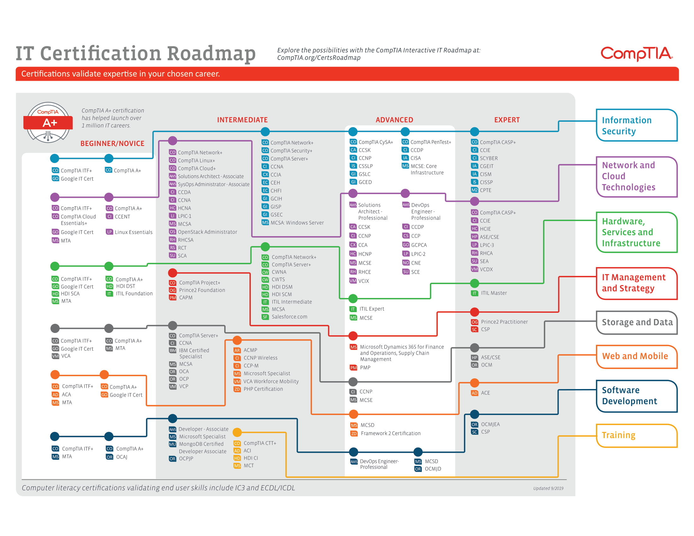

Industry
There are many different industries within tech. You can work more in a customer service role, there's networking, and even security. To get started I've listed a few Certifications to look into and some resources to find out more about them or even study for them!
CompTIA
In the world of IT certifications, knowing where to start is cruical. It's very easy to go down a rabit hole and find different avenues for different industries within tech. It's best to search where you want to end up and then look at their ceritifications. Certifications have nothing to do with your education background, what's important is your work ethic and dedication to learn something new. CompTIA offers an anbundance amount of certifications to get started within IT.
They've carely split up their ceritifications by the industry and the level of difficulty. Someone who just graduated may have start with a higher level ceritification as they have a foundation compared to someone with no experience or switching careers.
| Book | Certification | Author | |
|---|---|---|---|
| CompTIA A+ Certification All-in-One Exam Guide | CompTIA A+ | Mike Meyers | |
| Exam Cram CompTIA Network+ N10-007 | CompTIA Network+ | Emmett Dulaney | |
| CompTIA Security+ Get Certified Get Ahead: SY0-601 Study Guide | CompTIA Security+ | Darril Gibson | |
Videos
In addition to books there are also great video courses to help study for these certifications. There are paid options such as Udemy and Coursera. Youtube is a powerful resource with videos about pretty much everything you will experience within IT all for FREE!